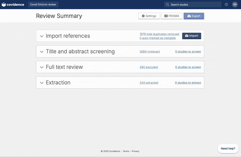
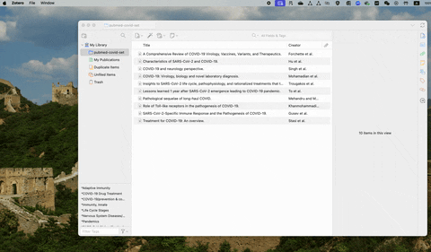
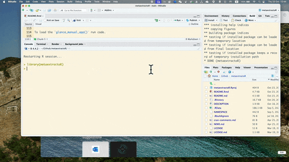
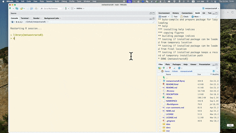
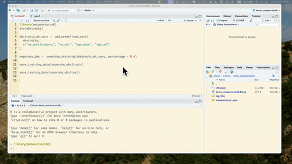

Installation
To install the package:
remotes::install_github("danyangdai/metaextractoR")Download and install Large Language Models (LLMs) for local usage supported by metaextractoR. Run the code below in Terminal or Console to install models:
Explore your choice of models at Ollama. Currently this version of the package only supports local LLMs via Ollama.
Workflow
This package design fit in to the Preferred Reporting Items for Systematic reviews and Meta-Analyses (PRISMA) guideline for systematic review and meta-analysis.
For systematic review and meta-analysis, users are encouraged to follow the study protocol developed for the systematic review and meta-analysis. This package will streamline the data extraction part in your systematic review with the power of Large Language Models (LLMs) while keeping a human in the loop for accuracy and oversight.
For more information, see our working paper here.
1. Getting the abstract information
For installation of the package and Ollama models on your local machine, check out the tutorial at: Introduction to metaextractoR - Part 1 data preparation and LLMs installation.
Once full-text review has been completed, you should have a list of articles included for the full-text extraction. At this stage, the user should have a csv file that contains a list of abstracts. If you are using Covidence, the csv file can be downloaded following the steps below:

If you are using free reference management software such as Zotero, the csv file contains abstracts can be exported following the steps below:

You can also use the sample data provided to you using data("abstracts") to load in a sample abstracts downloaded from Covidence.
2. Adding new columns to the raw abstract file
Once you have download or exported the csv file containing the abstracts, you can read in the csv file to your R environment. Below we use our example data.
library(metaextractoR)
str(abstracts)
#> tibble [50 × 8] (S3: tbl_df/tbl/data.frame)
#> $ Title : chr [1:50] "Development of a Risk Score for AKI onset in COVID-19 Patients: COV-AKI Score" "Risk factors associated with acute kidney injury in a cohort of hospitalized patients with COVID-19" "Clinical Features and Outcomes of Acute Kidney Injury in Critically Ill COVID-19 Patients: A Retrospective Observational Study" "Acute kidney injury in coronavirus infectious disease: a study of incidence, risk factors, and prognosis during"| __truncated__ ...
#> $ Authors : chr [1:50] "Palomba, H.; Cubos, D.; Bozza, F.; Zampieri, F.G.; Romano, T.G." "Contreras-Villamizar, K.; Barbosa, O.; Muñoz, A.C.; Suárez, J.S.; González, C.A.; Vargas, D.C.; Rodríguez-Sánch"| __truncated__ "Bouguezzi, N.; Ben Saida, I.; Toumi, R.; Meddeb, K.; Ennouri, E.; Bedhiafi, A.; Hamdi, D.; Boussarsar, M." "Magalhães, L.E.; de Oliveira, P.G.S.; Favarin, A.J.; Yuasa, B.K.; Cardoso, P.A.; Zamoner, W.; Ponce, D." ...
#> $ Abstract : chr [1:50] "Purpose: Acute Kidney Injury (AKI) in COVID-19 patients is associated with increased morbidity and mortality. I"| __truncated__ "Background: Patients with COVID-19 have a high incidence of acute kidney injury (AKI), which is associated with"| __truncated__ "Background: An alarming number of COVID-19 patients, especially in severe cases, have developed acute kidney in"| __truncated__ "Introduction: Acute kidney injury (AKI) is one of the main complications of COVID-19 caused by SARS-CoV-2. This"| __truncated__ ...
#> $ Published Year : num [1:50] 2023 2023 2023 2023 2023 ...
#> $ Published Month: chr [1:50] NA NA NA NA ...
#> $ Journal : chr [1:50] "BMC Nephrology" "BMC Nephrology" "Journal of Clinical Medicine" "International Urology and Nephrology" ...
#> $ DOI : chr [1:50] "10.1186/s12882-023-03095-4" "10.1186/s12882-023-03172-8" "10.3390/jcm12155127" "10.1007/s11255-022-03454-4" ...
#> $ Covidence # : chr [1:50] "#3896" "#3901" "#3981" "#4035" ...Following your systematic review protocol, we are going to create empty columns with pre-defined data extraction elements by using the function, add_predefined_vars. The new columns create placeholders for values entered either manuallly or extracted from a LLM.
abstracts_wt_vars <- add_predefined_vars(
abstracts,
c("no_participants", "no_aki", "age_mean", "age_sd")
)
str(abstracts_wt_vars)
#> tibble [50 × 16] (S3: tbl_df/tbl/data.frame)
#> $ Title : chr [1:50] "Development of a Risk Score for AKI onset in COVID-19 Patients: COV-AKI Score" "Risk factors associated with acute kidney injury in a cohort of hospitalized patients with COVID-19" "Clinical Features and Outcomes of Acute Kidney Injury in Critically Ill COVID-19 Patients: A Retrospective Observational Study" "Acute kidney injury in coronavirus infectious disease: a study of incidence, risk factors, and prognosis during"| __truncated__ ...
#> $ Authors : chr [1:50] "Palomba, H.; Cubos, D.; Bozza, F.; Zampieri, F.G.; Romano, T.G." "Contreras-Villamizar, K.; Barbosa, O.; Muñoz, A.C.; Suárez, J.S.; González, C.A.; Vargas, D.C.; Rodríguez-Sánch"| __truncated__ "Bouguezzi, N.; Ben Saida, I.; Toumi, R.; Meddeb, K.; Ennouri, E.; Bedhiafi, A.; Hamdi, D.; Boussarsar, M." "Magalhães, L.E.; de Oliveira, P.G.S.; Favarin, A.J.; Yuasa, B.K.; Cardoso, P.A.; Zamoner, W.; Ponce, D." ...
#> $ Abstract : chr [1:50] "Purpose: Acute Kidney Injury (AKI) in COVID-19 patients is associated with increased morbidity and mortality. I"| __truncated__ "Background: Patients with COVID-19 have a high incidence of acute kidney injury (AKI), which is associated with"| __truncated__ "Background: An alarming number of COVID-19 patients, especially in severe cases, have developed acute kidney in"| __truncated__ "Introduction: Acute kidney injury (AKI) is one of the main complications of COVID-19 caused by SARS-CoV-2. This"| __truncated__ ...
#> $ Published Year : num [1:50] 2023 2023 2023 2023 2023 ...
#> $ Published Month : chr [1:50] NA NA NA NA ...
#> $ Journal : chr [1:50] "BMC Nephrology" "BMC Nephrology" "Journal of Clinical Medicine" "International Urology and Nephrology" ...
#> $ DOI : chr [1:50] "10.1186/s12882-023-03095-4" "10.1186/s12882-023-03172-8" "10.3390/jcm12155127" "10.1007/s11255-022-03454-4" ...
#> $ Covidence # : chr [1:50] "#3896" "#3901" "#3981" "#4035" ...
#> $ no_participants_manual: logi [1:50] NA NA NA NA NA NA ...
#> $ no_aki_manual : logi [1:50] NA NA NA NA NA NA ...
#> $ age_mean_manual : logi [1:50] NA NA NA NA NA NA ...
#> $ age_sd_manual : logi [1:50] NA NA NA NA NA NA ...
#> $ no_participants_llm : logi [1:50] NA NA NA NA NA NA ...
#> $ no_aki_llm : logi [1:50] NA NA NA NA NA NA ...
#> $ age_mean_llm : logi [1:50] NA NA NA NA NA NA ...
#> $ age_sd_llm : logi [1:50] NA NA NA NA NA NA ...Before processing to the next step, check the current dataset contains all the data items with _llm and _manual. Most importantly, this data must contains abstract column. Use colnames() function to check the available variables in the dataset.
3. Separating training and testing sets
We are going to separate the full abstracts sample into traning and testing sets.
The training set will be used in Shinyapp 1 glance_manual_app() and Shinyapp 2 prompt_engineering_app().
Using function separate_training() to divide the full sample into training and testing. Follow the example:
separate_abs <- separate_training(abstracts_wt_vars, percentage = 0.4)To make sure that we are consistent with our training set and to avoid contamination of the testing set, we will save the training and testing abstracts into csv files.
To save the training set: save_training_data(). This function will create a folder named “metaextractor_data” folder under your current working directory. If you could not find your current working directory, use getwd() to find your current working directory. Follow the example to save the training and testing csv files:
save_training_data(separate_abs$train)
save_testing_data(separate_abs$test)Notice that you should have two .csv file saved to metaextractor_data folder under the current working directory, one called: “training_stage_0_data.csv” another called: “testing_stage_0_data.csv”. The name of the file has been pre-fixed to ensure the correct file goes into the Shinyapps.
4. glance_manual_app(): manual data extraction from abstracts for the training set.
Under the metaextractor_data folder, the training_stage_0_data.csv file should be uploaded to the glance_manual_app() Shinyapp.
To load the glance_manual_app() run code.

To see more detailed usage of this glance_manual_app(), see YouTube video: Introduction to metaextractoR - Part 2, glance_manual_app()
5. prompt_engineering_app(): prompt enginnering and model selection
Once the manual extraction is completed with the glance_manual_app(), the testing data should be saved. The saved data should be used in the prompt engineering Shinyapp.

To see more detailed usage of this prompt_engineering_app(), see YouTube video: Introduction to metaextractoR - Part 3, prompt_enginnering_app()
Each of the tested prompt and model is recorded and saved as a csv file in the log_files folder. You can use the log_files for accuracy and efficiency checking. Select the most appropriate model and prompt for the process_with_ollama for batch processing.
6. Batch process with process_with_ollama
Once the most ideal prompt and model is selected, use the process_with_ollama for the testing with LLMs to extract the data elements.
7. Manual check with manual_validation_app()
Once LLM extraction on the testing set been completed, use the manual_validation_app() to manually check the LLM extraction values.

To see more detailed usage of this manual_validation_app(), see YouTube video: Introduction to metaextractoR - Part 4, manual_validation_app()